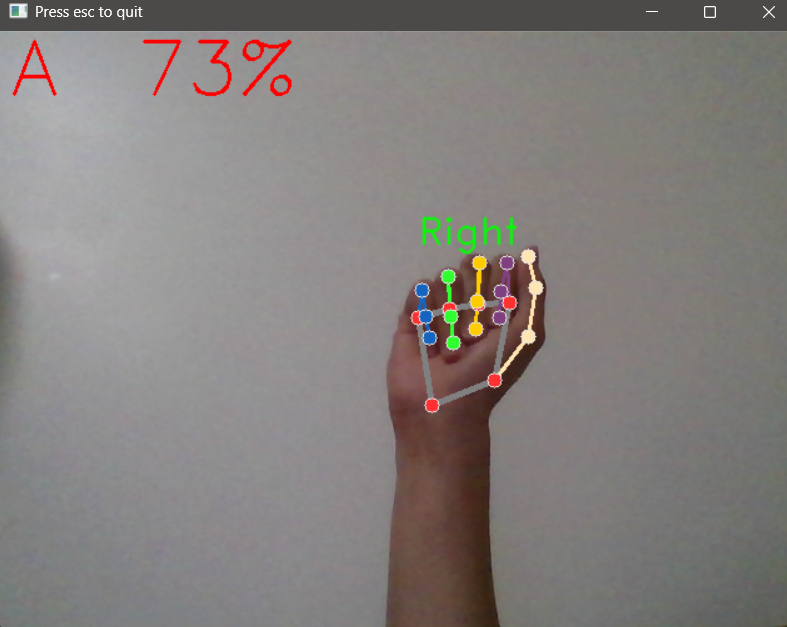

Apr 2026 - May 2026
Languages: Python
This project was a demonstrator for computer vision applications using OpenCV and MediaPipe. Its function is to detect the ASL alphabet and print a sentence, letter by letter, in the terminal. A user can sign a letter and hold it for ~2 seconds to type it, sign "yes" to add a space, and sign "no" to delete a character. Overall, the project was successful at demonstrating the OpenCV and MediaPipe's practical applications at a small scale.
Google's MediaPipe is a library that provides tools for several computer vision tasks. Among them is a hand landmarking toolset. It is able to detect multiple hands, identify left and right hands, and locate specific hand landmarks, like wrist, knuckles, joints, and finger tips. In this project, only one right hand at a time was supported for ASL detection.

An example of how the program recognizes hand signs, with confidence shown. The hand landmark overlay is from a Google example of MediaPipe hand landmarker, but the rest is by me.
A classifier algorithm was trained using scikit-learn (specifically a random forest classifer). To train it, it takes the position of the hand landmarks and normalizes it to the wrist, so that detection works with the hand anywhere on the screen. The data used to train was a mix of data from Kaggle and my own data. Custom training data can be made by the user with a Python script. It would let the user type which letter they are signing, have them sign it in front of the camera, and write the positions of the landmarks to a CSV file every frame for 300 frames. This meant there are 300 custom data points for each letter. Combined with the Kaggle dataset, that is acceptable for a small application like this.
When running the recognizer program, the classifier attempts to categorize the hand landmarks it is currently seeing. The program will then show the letter and its confidence on screen if its confidence is over 50%.
Some signs require movement, such as J and Z. The user can also sign "yes" which requires movement (this project uses a variant of "no" that does not require movement). As the classifier only works on stationary signs, the method of detecting these signs are different. The program instead looks for movement of specific landmarks, comparing the location of specific points over time. For instance, to detect "Z", the program looks at the index fingertip trajector and checks for the "Z" motion. Some rejections for false positives do exist, such as with "J" detection, in which the program will only recognize a J if the pinky moves significantly more than the index. This is to reject cases where the hand is simply moving around and "J" is not being signed.
The main limitation of this project was the camera quality. I unfortunately only had access to a built-in webcam, limiting camera quality. The result was that the image was poor regardless of lighting and motion was extremely hard to detect due to motion smearing. Further development of this project can only continue once better equipment is acquired.